물고기를 먹는 가마우지
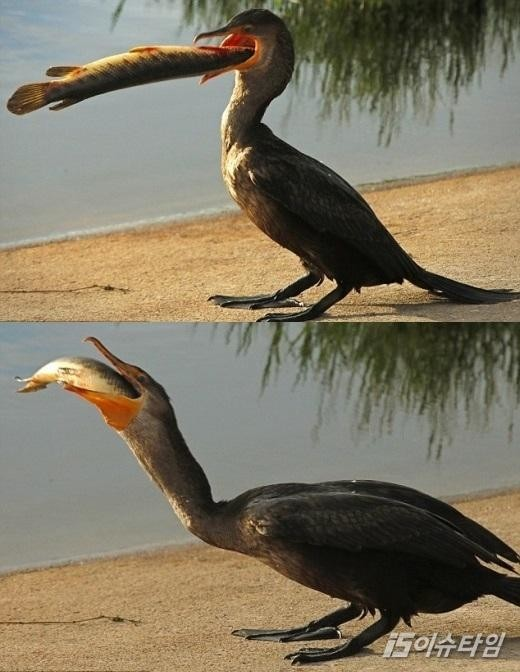45cm물고기를 한번에 먹는 가마우지
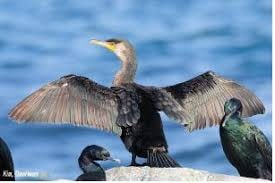날개를 자랑하는 가마우지
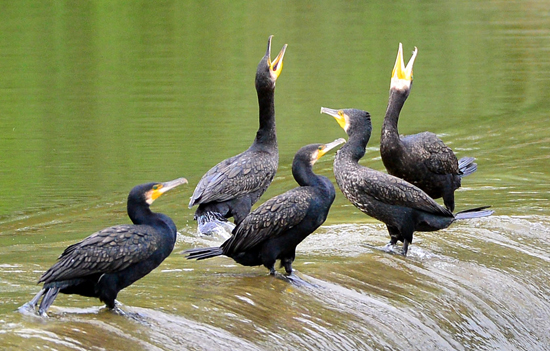입 크기를 자랑하는 가마우지
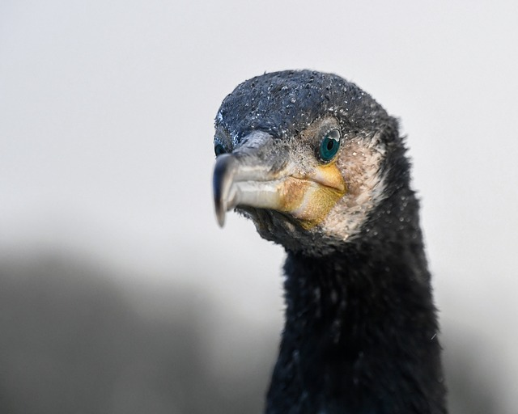잘생긴 가마우지
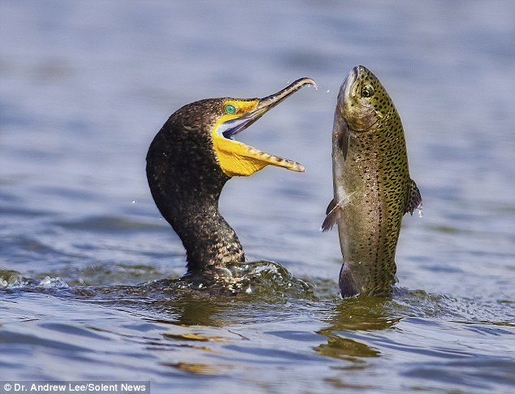욕망의 가마우지
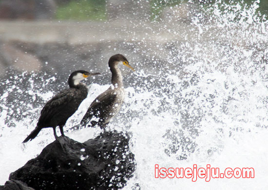거센 파도와 마주하는 가마우지
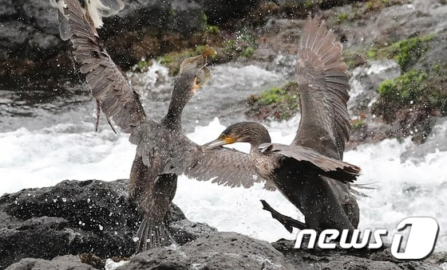먹이 다툼을 벌이는 가마우지
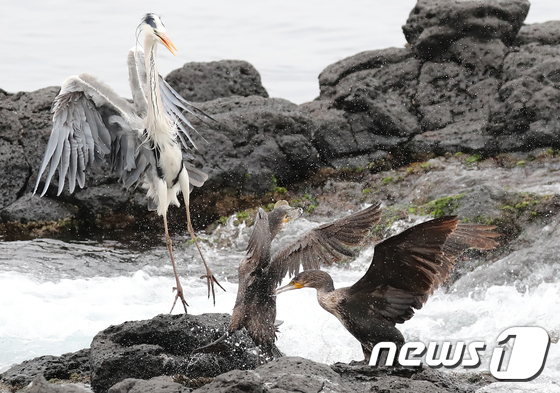먹이 다툼으로 왜가리를 놀래키는 가마우지
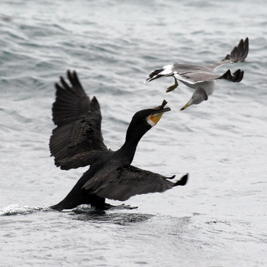괭이갈매기와 싸우는 가마우지
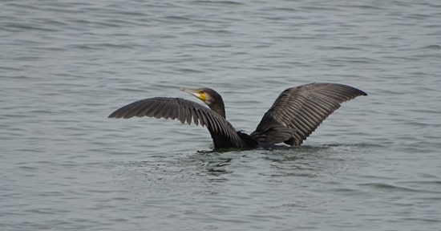수영을 즐기는 가마우지
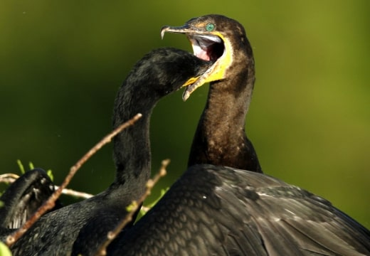목에 뭐가 걸려서 봐달라고 입을 벌리는 가마우지
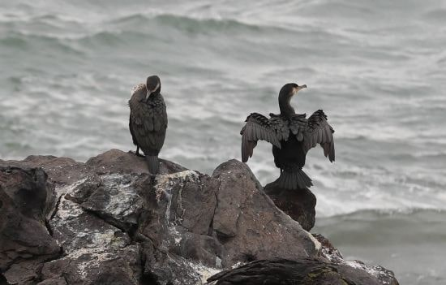용두암에서 숨을 고르는 가마우지
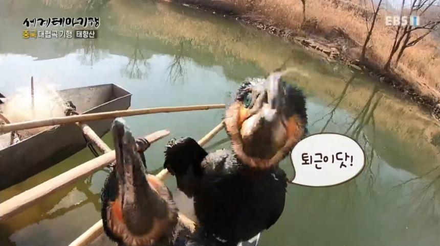곧 퇴근하는 가마우지
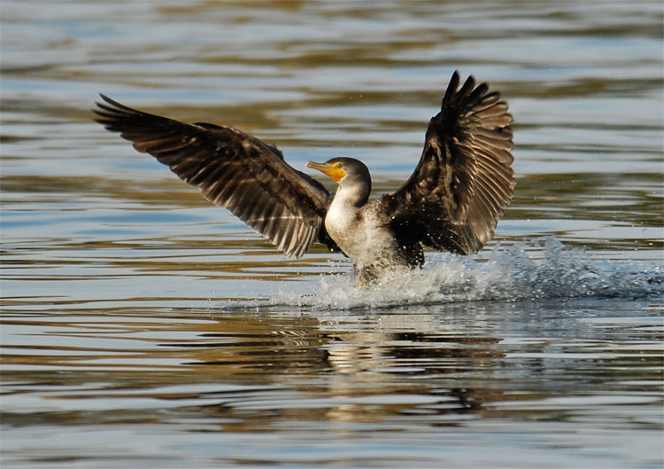물 위를 걷는 가마우지